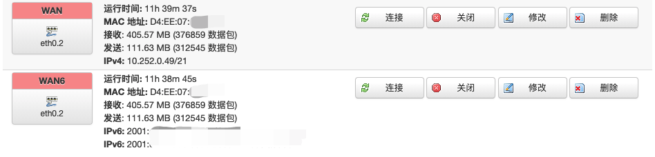
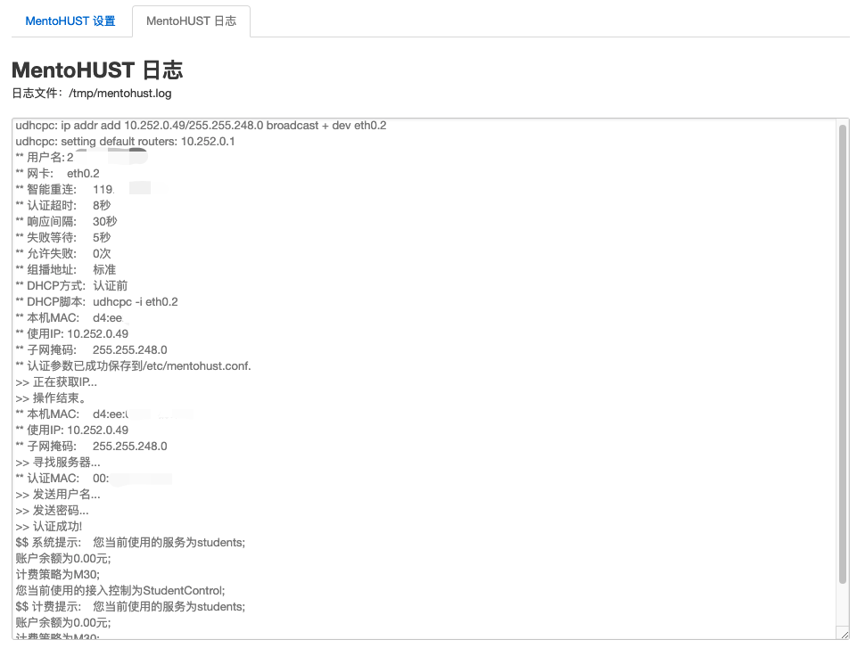
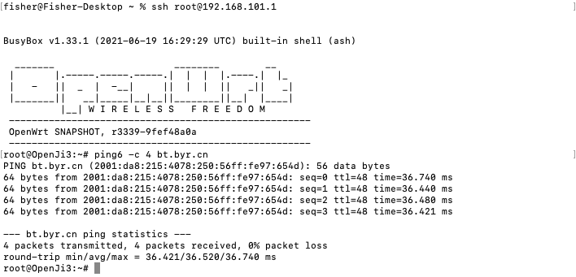
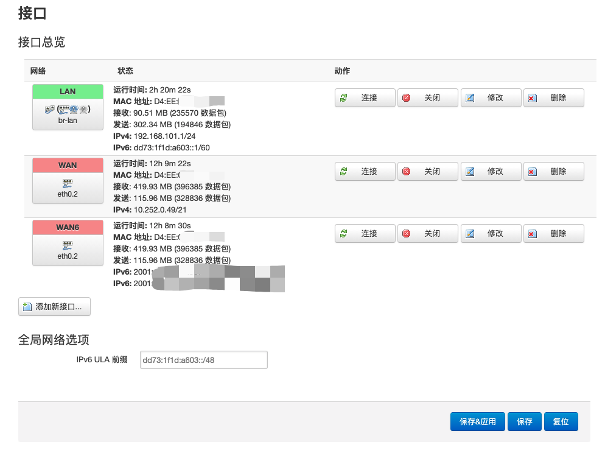
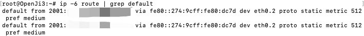
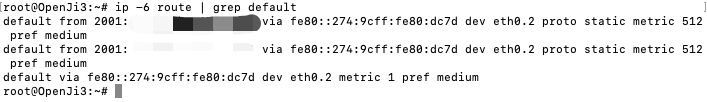
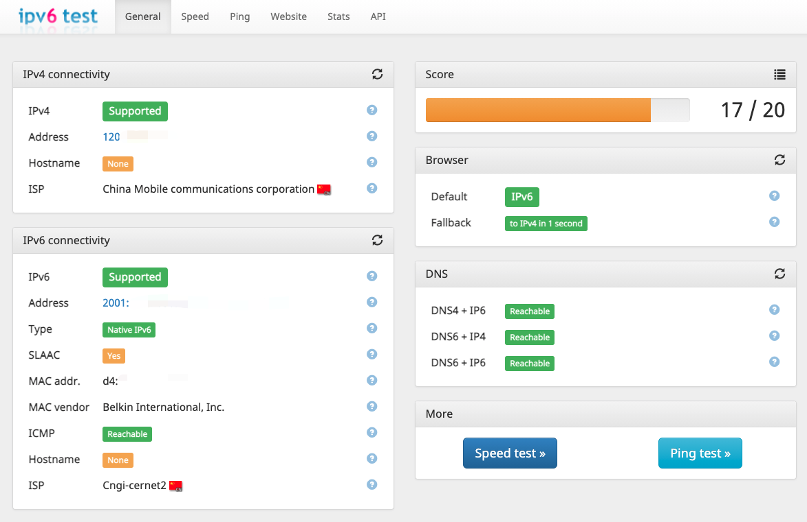
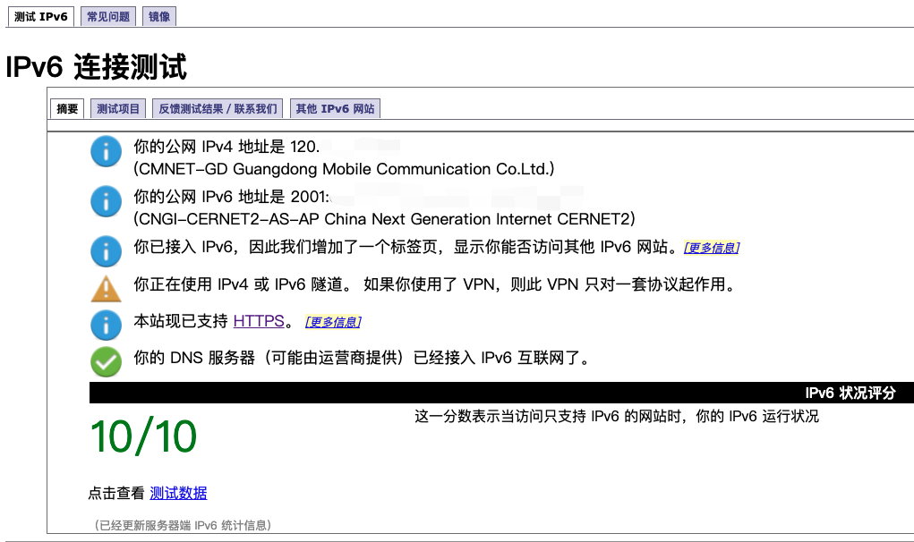

<!DOCTYPE html>
<html lang="zh-CN">
<head>
  <meta charset="UTF-8">
<meta name="viewport" content="width=device-width, initial-scale=1, maximum-scale=2">
<meta name="theme-color" content="#222">
<meta name="generator" content="Hexo 3.9.0">
  <link rel="apple-touch-icon" sizes="180x180" href="/images/icons/logo64.png">
  <link rel="icon" type="image/png" sizes="32x32" href="/images/icons/logo32.png">
  <link rel="icon" type="image/png" sizes="16x16" href="/images/icons/logo32.png">
  <link rel="mask-icon" href="/images/icons/logo200.png" color="#222">

<link rel="stylesheet" href="/css/main.css">


<link rel="stylesheet" href="/lib/font-awesome/css/font-awesome.min.css">


<script id="hexo-configurations">
  var NexT = window.NexT || {};
  var CONFIG = {
    root: '/',
    scheme: 'Gemini',
    version: '7.4.2',
    exturl: false,
    sidebar: {"position":"left","display":"post","offset":12,"onmobile":false},
    copycode: {"enable":true,"show_result":true,"style":null},
    back2top: {"enable":true,"sidebar":false,"scrollpercent":false},
    bookmark: {"enable":false,"color":"#222","save":"auto"},
    fancybox: false,
    mediumzoom: false,
    lazyload: false,
    pangu: false,
    algolia: {
      appID: '',
      apiKey: '',
      indexName: '',
      hits: {"per_page":10},
      labels: {"input_placeholder":"Search for Posts","hits_empty":"We didn't find any results for the search: ${query}","hits_stats":"${hits} results found in ${time} ms"}
    },
    localsearch: {"enable":false,"trigger":"auto","top_n_per_article":1,"unescape":false,"preload":false},
    path: '',
    motion: {"enable":true,"async":false,"transition":{"post_block":"fadeIn","post_header":"slideDownIn","post_body":"slideDownIn","coll_header":"slideLeftIn","sidebar":"slideUpIn"}},
    translation: {
      copy_button: '复制',
      copy_success: '复制成功',
      copy_failure: '复制失败'
    },
    sidebarPadding: 40
  };
</script>

  <meta name="description" content="前言因教育网IPv6不限速，使用清华TUNA的开源镜像站下载资源能够跑满带宽，体验非常好，所以就有了给路由器配置IPv6的想法。之前使用极路由官方固件时有官方的教育网插件可以用（使用6relay），但换了Openwrt后使用的是odhcpd，需要自己重新配置一下。这篇博客纪录了我的配置过程，其中参考了恩山论坛的这篇帖子。">
<meta name="keywords" content="网络,路由器">
<meta property="og:type" content="article">
<meta property="og:title" content="SCNU校园网IPv6配置">
<meta property="og:url" content="http://www.fisheryung.top/scnu校园网ipv6配置.html">
<meta property="og:site_name" content="Fisher&#39;s Blog">
<meta property="og:description" content="前言因教育网IPv6不限速，使用清华TUNA的开源镜像站下载资源能够跑满带宽，体验非常好，所以就有了给路由器配置IPv6的想法。之前使用极路由官方固件时有官方的教育网插件可以用（使用6relay），但换了Openwrt后使用的是odhcpd，需要自己重新配置一下。这篇博客纪录了我的配置过程，其中参考了恩山论坛的这篇帖子。">
<meta property="og:locale" content="zh-CN">
<meta property="og:image" content="http://www.fisheryung.top/images/router/ipv6_wan6.png">
<meta property="og:image" content="http://www.fisheryung.top/images/router/ipv6_mentohust.png">
<meta property="og:image" content="http://www.fisheryung.top/images/router/ipv6_ping6.png">
<meta property="og:image" content="http://www.fisheryung.top/images/router/ipv6_interface.png">
<meta property="og:image" content="http://www.fisheryung.top/images/router/ipv6_route.png">
<meta property="og:image" content="http://www.fisheryung.top/images/router/ipv6_route1.png">
<meta property="og:image" content="http://www.fisheryung.top/images/router/ipv6_test2.png">
<meta property="og:image" content="http://www.fisheryung.top/images/router/ipv6_test1.png">
<meta property="og:updated_time" content="2021-06-24T04:55:00.000Z">
<meta name="twitter:card" content="summary">
<meta name="twitter:title" content="SCNU校园网IPv6配置">
<meta name="twitter:description" content="前言因教育网IPv6不限速，使用清华TUNA的开源镜像站下载资源能够跑满带宽，体验非常好，所以就有了给路由器配置IPv6的想法。之前使用极路由官方固件时有官方的教育网插件可以用（使用6relay），但换了Openwrt后使用的是odhcpd，需要自己重新配置一下。这篇博客纪录了我的配置过程，其中参考了恩山论坛的这篇帖子。">
<meta name="twitter:image" content="http://www.fisheryung.top/images/router/ipv6_wan6.png">

<link rel="canonical" href="http://www.fisheryung.top/scnu校园网ipv6配置.html">


<script id="page-configurations">
  // https://hexo.io/docs/variables.html
  CONFIG.page = {
    sidebar: "",
    isHome: false,
    isPost: true,
    isPage: false,
    isArchive: false
  };
</script>

  <title>SCNU校园网IPv6配置 | Fisher's Blog</title>
  
    <script async src="https://www.googletagmanager.com/gtag/js?id=UA-111555456-1"></script>
    <script>
      var host = window.location.hostname;
      if (host !== "localhost" || !true) {
        window.dataLayer = window.dataLayer || [];
        function gtag(){dataLayer.push(arguments);}
        gtag('js', new Date());
        gtag('config', 'UA-111555456-1');
      }
    </script>


  <noscript>
  <style>
  .use-motion .brand,
  .use-motion .menu-item,
  .sidebar-inner,
  .use-motion .post-block,
  .use-motion .pagination,
  .use-motion .comments,
  .use-motion .post-header,
  .use-motion .post-body,
  .use-motion .collection-header { opacity: initial; }

  .use-motion .site-title,
  .use-motion .site-subtitle {
    opacity: initial;
    top: initial;
  }

  .use-motion .logo-line-before i { left: initial; }
  .use-motion .logo-line-after i { right: initial; }
  </style>
</noscript>

</head>

<body itemscope itemtype="http://schema.org/WebPage">
  <div class="container use-motion">
    <div class="headband"></div>

    <header class="header" itemscope itemtype="http://schema.org/WPHeader">
      <div class="header-inner"><div class="site-brand-container">
  <div class="site-meta">

    <div>
      <a href="/" class="brand" rel="start">
        <span class="logo-line-before"><i></i></span>
        <span class="site-title">Fisher's Blog</span>
        <span class="logo-line-after"><i></i></span>
      </a>
    </div>
        <p class="site-subtitle">自由尋覓快樂別人從沒法感受</p>
  </div>

  <div class="site-nav-toggle">
    <div class="toggle" aria-label="切换导航栏">
      <span class="toggle-line toggle-line-first"></span>
      <span class="toggle-line toggle-line-middle"></span>
      <span class="toggle-line toggle-line-last"></span>
    </div>
  </div>
</div>


<nav class="site-nav">
  
  <ul id="menu" class="menu">
        <li class="menu-item menu-item-home">

    <a href="/" rel="section"><i class="fa fa-fw fa-home"></i>首页</a>

  </li>
        <li class="menu-item menu-item-about">

    <a href="/about/" rel="section"><i class="fa fa-fw fa-user"></i>关于</a>

  </li>
        <li class="menu-item menu-item-tags">

    <a href="/tags/" rel="section"><i class="fa fa-fw fa-tags"></i>标签</a>

  </li>
        <li class="menu-item menu-item-archives">

    <a href="/archives/" rel="section"><i class="fa fa-fw fa-archive"></i>归档</a>

  </li>
  </ul>

</nav>
</div>
    </header>

    
  <div class="back-to-top">
    <i class="fa fa-arrow-up"></i>
    <span>0%</span>
  </div>
  <div class="reading-progress-bar"></div>

  <a href="https://github.com/FisherWY" class="github-corner" title="Follow me on GitHub" aria-label="Follow me on GitHub" rel="noopener" target="_blank"><svg width="80" height="80" viewBox="0 0 250 250" aria-hidden="true"><path d="M0,0 L115,115 L130,115 L142,142 L250,250 L250,0 Z"></path><path d="M128.3,109.0 C113.8,99.7 119.0,89.6 119.0,89.6 C122.0,82.7 120.5,78.6 120.5,78.6 C119.2,72.0 123.4,76.3 123.4,76.3 C127.3,80.9 125.5,87.3 125.5,87.3 C122.9,97.6 130.6,101.9 134.4,103.2" fill="currentColor" style="transform-origin: 130px 106px;" class="octo-arm"></path><path d="M115.0,115.0 C114.9,115.1 118.7,116.5 119.8,115.4 L133.7,101.6 C136.9,99.2 139.9,98.4 142.2,98.6 C133.8,88.0 127.5,74.4 143.8,58.0 C148.5,53.4 154.0,51.2 159.7,51.0 C160.3,49.4 163.2,43.6 171.4,40.1 C171.4,40.1 176.1,42.5 178.8,56.2 C183.1,58.6 187.2,61.8 190.9,65.4 C194.5,69.0 197.7,73.2 200.1,77.6 C213.8,80.2 216.3,84.9 216.3,84.9 C212.7,93.1 206.9,96.0 205.4,96.6 C205.1,102.4 203.0,107.8 198.3,112.5 C181.9,128.9 168.3,122.5 157.7,114.1 C157.9,116.9 156.7,120.9 152.7,124.9 L141.0,136.5 C139.8,137.7 141.6,141.9 141.8,141.8 Z" fill="currentColor" class="octo-body"></path></svg></a>


    <main class="main">
      <div class="main-inner">
        <div class="content-wrap">
          

          <div class="content">
            

  <div class="posts-expand">
      
  
  
  <article itemscope itemtype="http://schema.org/Article" class="post-block " lang="zh-CN">
    <link itemprop="mainEntityOfPage" href="http://www.fisheryung.top/scnu校园网ipv6配置.html">

    <span hidden itemprop="author" itemscope itemtype="http://schema.org/Person">
      <meta itemprop="image" content="/images/icons/avatar.jpg">
      <meta itemprop="name" content="Fisher">
      <meta itemprop="description" content="记录学习生活中的点滴">
    </span>

    <span hidden itemprop="publisher" itemscope itemtype="http://schema.org/Organization">
      <meta itemprop="name" content="Fisher's Blog">
    </span>
      <header class="post-header">
        <h1 class="post-title" itemprop="name headline">
          SCNU校园网IPv6配置
        </h1>

        <div class="post-meta">
            <span class="post-meta-item">
              <span class="post-meta-item-icon">
                <i class="fa fa-calendar-o"></i>
              </span>
              <span class="post-meta-item-text">发表于</span>
              

              <time title="创建时间：2021-06-24 11:03:47 / 修改时间：12:55:00" itemprop="dateCreated datePublished" datetime="2021-06-24T11:03:47+08:00">2021-06-24</time>
            </span>

          
            <span id="/scnu校园网ipv6配置.html" class="post-meta-item leancloud_visitors" data-flag-title="SCNU校园网IPv6配置" title="阅读次数">
              <span class="post-meta-item-icon">
                <i class="fa fa-eye"></i>
              </span>
              <span class="post-meta-item-text">阅读次数：</span>
              <span class="leancloud-visitors-count"></span>
            </span>

        </div>
      </header>

    
    
    
    <div class="post-body" itemprop="articleBody">

      
        <h1 id="前言"><a href="#前言" class="headerlink" title="前言"></a>前言</h1><p>因教育网IPv6不限速，使用清华TUNA的开源镜像站下载资源能够跑满带宽，体验非常好，所以就有了给路由器配置IPv6的想法。之前使用极路由官方固件时有官方的教育网插件可以用（使用6relay），但换了Openwrt后使用的是odhcpd，需要自己重新配置一下。这篇博客纪录了我的配置过程，其中参考了恩山论坛的<a href="https://www.right.com.cn/forum/thread-316405-1-1.html" target="_blank" rel="noopener">这篇</a>帖子。</p><a id="more"></a>
<h1 id="配置环境"><a href="#配置环境" class="headerlink" title="配置环境"></a>配置环境</h1><ol>
<li>本次配置使用的硬件设备：极路由3（HC5861、MT7620）</li>
<li>本次配置使用的固件：Lean’s Openwrt R21.6.22</li>
<li>本次配置使用的Mentohust：<a href="https://github.com/KyleRicardo/MentoHUST-OpenWrt-ipk" target="_blank" rel="noopener">Mentohust-ipk</a>、<a href="https://github.com/BoringCat/luci-app-mentohust" target="_blank" rel="noopener">Luci-App-Mentohust</a></li>
</ol>
<p>Lean’s Openwrt中内核模块默认勾选了NAT6功能，因此编译时只需要勾选编译Mentohust相关的软件包即可，编译的过程在此就不赘述了。</p>
<h1 id="路由器配置"><a href="#路由器配置" class="headerlink" title="路由器配置"></a>路由器配置</h1><p>刷入固件后，先不要连接路由器的WAN口，待电脑DHCP获取到由路由器分发的IP地址后，再将网线连接到WAN口。（如果一直连接WAN口，电脑会首先获取到校园网DHCP的IP地址，此时需要断开并重启电脑与路由器的连接）</p>
<h2 id="WAN6接口配置"><a href="#WAN6接口配置" class="headerlink" title="WAN6接口配置"></a>WAN6接口配置</h2><p>在基本设置中，各项配置如下：</p>
<ul>
<li>协议：DHCPv6客户端</li>
<li>请求IPv6地址：try</li>
<li>请求指定长度的IPv6前缀：自动</li>
</ul>
<p>在高级设置中，各项配置如下：</p>
<ul>
<li>使用内置的IPv6管理：不勾选</li>
<li>使用对端通告的 DNS 服务器：不勾选（SCNU校园网不分发IPv6的DNS服务器地址，IPv6的地址解析全都是用v4的DNS服务器，因此需要自行指定）</li>
<li>使用自定义的DNS服务器：<code>2001:da8::666</code></li>
</ul>
<p>保存并应用，可以看到WAN口同时获得了IPv4和IPv6的地址，接下来可以进行Mentohust的配置了。</p>
<p></p>
<h2 id="Mentohust配置"><a href="#Mentohust配置" class="headerlink" title="Mentohust配置"></a>Mentohust配置</h2><p>打开<code>服务-MentoHUST</code>，在常规设置中进行如下配置：</p>
<ul>
<li>用户名和密码：填入自己的校园网用户名和密码</li>
<li>接口：选择WAN口网卡，我的路由器是WAN口是<code>eth0.2</code></li>
<li>Ping主机：如果需要掉线检测功能，就填入一个公网IP地址，我使用了自己的云服务器IP地址</li>
</ul>
<p>在高级设置中进行如下配置，其他无需修改：</p>
<ul>
<li>验证失败等待时间：5</li>
<li>DHCP设置：认证前</li>
<li>DHCP的脚本：<code>udhcpc -i eth0.2</code></li>
</ul>
<p>最后在常规设置中勾选启用，保存并应用，查看日志，试试能否登录成功。</p>
<p></p>
<p>确认能够连上互联网后，ssh连接路由器，尝试ping一下IPv6的地址，验证路由器是否正确获取IPv6地址并连接成功，以下是ping6的命令和执行结果。</p>
<figure class="highlight sh"><table><tr><td class="gutter"><pre><span class="line">1</span><br></pre></td><td class="code"><pre><span class="line">ping6 -c 4 bt.byr.cn</span><br></pre></td></tr></table></figure>
<p></p>
<h2 id="LAN口配置"><a href="#LAN口配置" class="headerlink" title="LAN口配置"></a>LAN口配置</h2><p>在<code>接口</code>页面，找到<code>全局网络选项</code>，修改<code>IPv6 ULA前缀</code>：</p>
<ul>
<li>将地址的首位改为<code>d</code>（你喜欢改什么都行），我从<code>fd73:1f1d:a603::/48</code>改为了<code>dd73:1f1d:a603::/48</code></li>
</ul>
<p>编辑LAN口配置，找到<code>DHCP服务器</code>，修改<code>IPv6</code>设置：</p>
<ul>
<li>路由通告服务：服务器模式</li>
<li>DHCPv6服务：服务器模式</li>
<li>NDP代理：已禁用</li>
<li>DHCPv6模式：无状态的+有状态的</li>
<li>总是通告默认路由：取消勾选</li>
</ul>
<p>保存并等待一段时间，此时电脑应该获取到了路由器自行分发的IPv6地址，LAN口也有自己的IPv6地址。</p>
<p></p>
<h2 id="防火墙配置"><a href="#防火墙配置" class="headerlink" title="防火墙配置"></a>防火墙配置</h2><p>打开防火墙的<code>自定义规则</code>，添加如下一行规则并点击重启防火墙，开启IPv6数据包的转发。</p>
<figure class="highlight sh"><table><tr><td class="gutter"><pre><span class="line">1</span><br></pre></td><td class="code"><pre><span class="line">ip6tables -t nat -A POSTROUTING -o eth0.2 -j MASQUERADE</span><br></pre></td></tr></table></figure>
<h2 id="网关配置"><a href="#网关配置" class="headerlink" title="网关配置"></a>网关配置</h2><p>首先ssh登录路由器，查看当前IPv6的默认路由</p>
<figure class="highlight sh"><table><tr><td class="gutter"><pre><span class="line">1</span><br></pre></td><td class="code"><pre><span class="line">ip -6 route | grep default</span><br></pre></td></tr></table></figure>
<p>可以看到有2条路由配置</p>
<p></p>
<p>复制这个<code>fe80</code>开头的IPv6地址，将当前的默认网关添加到默认路由中</p>
<figure class="highlight sh"><table><tr><td class="gutter"><pre><span class="line">1</span><br></pre></td><td class="code"><pre><span class="line">route -A inet6 add default gw fe80::274:9cff:fe80:dc7d dev eth0.2</span><br></pre></td></tr></table></figure>
<p>再次查看当前的默认路由，可以看到有3条记录</p>
<p></p>
<p>重启网络服务，验证局域网设备能否连上IPv6网络（重启后记得手动重启Mentohust服务）</p>
<figure class="highlight sh"><table><tr><td class="gutter"><pre><span class="line">1</span><br></pre></td><td class="code"><pre><span class="line">/etc/init.d/network restart</span><br></pre></td></tr></table></figure>
<p>由于默认路由重启后会重置，因此需要添加一个脚本，让路由器开机自动添加默认路由</p>
<figure class="highlight sh"><table><tr><td class="gutter"><pre><span class="line">1</span><br></pre></td><td class="code"><pre><span class="line">vi /etc/hotplug.d/iface/90-ipv6</span><br></pre></td></tr></table></figure>
<p>添加如下内容，其中的默认路由地址修改为自己的默认路由</p>
<figure class="highlight sh"><table><tr><td class="gutter"><pre><span class="line">1</span><br><span class="line">2</span><br><span class="line">3</span><br></pre></td><td class="code"><pre><span class="line"><span class="meta">#!/bin/sh</span></span><br><span class="line">[ <span class="string">"<span class="variable">$ACTION</span>"</span> = ifup ] || <span class="built_in">exit</span> 0</span><br><span class="line">route -A inet6 add default gw fe80::274:9cff:fe80:dc7d dev eth0.2</span><br></pre></td></tr></table></figure>
<p>保存退出后，赋予执行权限</p>
<figure class="highlight sh"><table><tr><td class="gutter"><pre><span class="line">1</span><br></pre></td><td class="code"><pre><span class="line">chmod +x /etc/hotplug.d/iface/90-ipv6</span><br></pre></td></tr></table></figure>
<h1 id="IPv6测试"><a href="#IPv6测试" class="headerlink" title="IPv6测试"></a>IPv6测试</h1><p>打开<a href="http://ipv6-test.com/" target="_blank" rel="noopener">http://ipv6-test.com/</a></p>
<p></p>
<p>打开<a href="http://test-ipv6.com/" target="_blank" rel="noopener">http://test-ipv6.com/</a></p>
<p></p>
<h1 id="总结"><a href="#总结" class="headerlink" title="总结"></a>总结</h1><p>对于SCNUNET，一开始我使用的IPv6方案为全中继的模式，路由器局域网设备IPv6地址全由上级路由器分发，局域网设备的确是获得了公网IPv6的地址，但是这个地址是上不了网的，而路由器的IPv6地址却使用正常，个人猜测是因为这些IPv6地址没有登录校园网，因此也无法使用。</p>
<p>既然在中继IPv6的方案下不可行，那就只能使用NAT6的方法了。在参考了许多篇配置的文章后，终于是配置成功了。</p>

    </div>

    
    
    

      <footer class="post-footer">
          <div class="post-tags">
              <a href="/tags/网络/" rel="tag"># 网络</a>
              <a href="/tags/路由器/" rel="tag"># 路由器</a>
          </div>

        

          <div class="post-nav">
            <div class="post-nav-next post-nav-item">
                <a href="/从high-sierra升级到big-sur.html" rel="next" title="从High Sierra升级到Big Sur">
                  <i class="fa fa-chevron-left"></i> 从High Sierra升级到Big Sur
                </a>
            </div>

            <span class="post-nav-divider"></span>

            <div class="post-nav-prev post-nav-item">
                <a href="/小米路由器4千兆版刷openwrt.html" rel="prev" title="小米路由器4千兆版刷OpenWrt">
                  小米路由器4千兆版刷OpenWrt <i class="fa fa-chevron-right"></i>
                </a>
            </div>
          </div>
      </footer>
    
  </article>
  
  
  

  </div>


          </div>
          

        </div>
          
  
  <div class="toggle sidebar-toggle">
    <span class="toggle-line toggle-line-first"></span>
    <span class="toggle-line toggle-line-middle"></span>
    <span class="toggle-line toggle-line-last"></span>
  </div>

  <aside class="sidebar">
    <div class="sidebar-inner">

      <ul class="sidebar-nav motion-element">
        <li class="sidebar-nav-toc">
          文章目录
        </li>
        <li class="sidebar-nav-overview">
          站点概览
        </li>
      </ul>

      <!--noindex-->
      <div class="post-toc-wrap sidebar-panel">
          <div class="post-toc motion-element"><ol class="nav"><li class="nav-item nav-level-1"><a class="nav-link" href="#前言"><span class="nav-number">1.</span> <span class="nav-text">前言</span></a></li><li class="nav-item nav-level-1"><a class="nav-link" href="#配置环境"><span class="nav-number">2.</span> <span class="nav-text">配置环境</span></a></li><li class="nav-item nav-level-1"><a class="nav-link" href="#路由器配置"><span class="nav-number">3.</span> <span class="nav-text">路由器配置</span></a><ol class="nav-child"><li class="nav-item nav-level-2"><a class="nav-link" href="#WAN6接口配置"><span class="nav-number">3.1.</span> <span class="nav-text">WAN6接口配置</span></a></li><li class="nav-item nav-level-2"><a class="nav-link" href="#Mentohust配置"><span class="nav-number">3.2.</span> <span class="nav-text">Mentohust配置</span></a></li><li class="nav-item nav-level-2"><a class="nav-link" href="#LAN口配置"><span class="nav-number">3.3.</span> <span class="nav-text">LAN口配置</span></a></li><li class="nav-item nav-level-2"><a class="nav-link" href="#防火墙配置"><span class="nav-number">3.4.</span> <span class="nav-text">防火墙配置</span></a></li><li class="nav-item nav-level-2"><a class="nav-link" href="#网关配置"><span class="nav-number">3.5.</span> <span class="nav-text">网关配置</span></a></li></ol></li><li class="nav-item nav-level-1"><a class="nav-link" href="#IPv6测试"><span class="nav-number">4.</span> <span class="nav-text">IPv6测试</span></a></li><li class="nav-item nav-level-1"><a class="nav-link" href="#总结"><span class="nav-number">5.</span> <span class="nav-text">总结</span></a></li></ol></div>
      </div>
      <!--/noindex-->

      <div class="site-overview-wrap sidebar-panel">
        <div class="site-author motion-element" itemprop="author" itemscope itemtype="http://schema.org/Person">
  
  <p class="site-author-name" itemprop="name">Fisher</p>
  <div class="site-description" itemprop="description">记录学习生活中的点滴</div>
</div>
<div class="site-state-wrap motion-element">
  <nav class="site-state">
      <div class="site-state-item site-state-posts">
          <a href="/archives/">
        
          <span class="site-state-item-count">88</span>
          <span class="site-state-item-name">日志</span>
        </a>
      </div>
      <div class="site-state-item site-state-tags">
            <a href="/tags/">
          
        <span class="site-state-item-count">19</span>
        <span class="site-state-item-name">标签</span></a>
      </div>
  </nav>
</div>
  <div class="links-of-author motion-element">
      <span class="links-of-author-item">
        <a href="https://github.com/FisherWY" title="GitHub &rarr; https://github.com/FisherWY" rel="noopener" target="_blank"><i class="fa fa-fw fa-github"></i>GitHub</a>
      </span>
      <span class="links-of-author-item">
        <a href="mailto:fisheryung@outlook.com" title="E-Mail &rarr; mailto:fisheryung@outlook.com" rel="noopener" target="_blank"><i class="fa fa-fw fa-envelope"></i>E-Mail</a>
      </span>
  </div>


      </div>

    </div>
  </aside>
  <div id="sidebar-dimmer"></div>


      </div>
    </main>

    <footer class="footer">
      <div class="footer-inner">
        

<div class="copyright">
  
  &copy; 
  <span itemprop="copyrightYear">2022</span>
  <span class="with-love">
    <i class="fa fa-user"></i>
  </span>
  <span class="author" itemprop="copyrightHolder">Fisher</span>
</div>
  <div class="powered-by">由 <a href="https://hexo.io" class="theme-link" rel="noopener" target="_blank">Hexo</a> 强力驱动 v3.9.0
  </div>
  <span class="post-meta-divider">|</span>
  <div class="theme-info">主题 – <a href="https://theme-next.org" class="theme-link" rel="noopener" target="_blank">NexT.Gemini</a> v7.4.2
  </div>

        


  <script>
  function leancloudSelector(url) {
    return document.getElementById(url).querySelector('.leancloud-visitors-count');
  }
  if (CONFIG.page.isPost) {
    function addCount(Counter) {
      var visitors = document.querySelector('.leancloud_visitors');
      var url = visitors.getAttribute('id').trim();
      var title = visitors.getAttribute('data-flag-title').trim();

      Counter('get', `/classes/Counter?where=${JSON.stringify({ url })}`)
        .then(response => response.json())
        .then(({ results }) => {
          if (results.length > 0) {
            var counter = results[0];
            Counter('put', '/classes/Counter/' + counter.objectId, { time: { '__op': 'Increment', 'amount': 1 } })
              .then(response => response.json())
              .then(() => {
                leancloudSelector(url).innerText = counter.time + 1;
              })
              .catch(error => {
                console.log('Failed to save visitor count', error);
              })
          } else {
              leancloudSelector(url).innerText = 'Counter not initialized! More info at console err msg.';
              console.error('ATTENTION! LeanCloud counter has security bug, see how to solve it here: https://github.com/theme-next/hexo-leancloud-counter-security. \n However, you can still use LeanCloud without security, by setting `security` option to `false`.');
            
          }
        })
        .catch(error => {
          console.log('LeanCloud Counter Error', error);
        });
    }
  } else {
    function showTime(Counter) {
      var visitors = document.querySelectorAll('.leancloud_visitors');
      var entries = [...visitors].map(element => {
        return element.getAttribute('id').trim();
      });

      Counter('get', `/classes/Counter?where=${JSON.stringify({ url: { '$in': entries } })}`)
        .then(response => response.json())
        .then(({ results }) => {
          if (results.length === 0) {
            document.querySelectorAll('.leancloud_visitors .leancloud-visitors-count').forEach(element => {
              element.innerText = 0;
            });
            return;
          }
          for (var i = 0; i < results.length; i++) {
            var item = results[i];
            var url = item.url;
            var time = item.time;
            leancloudSelector(url).innerText = time;
          }
          for (var i = 0; i < entries.length; i++) {
            var url = entries[i];
            var element = leancloudSelector(url);
            if (element.innerText == '') {
              element.innerText = 0;
            }
          }
        })
        .catch(error => {
          console.log('LeanCloud Counter Error', error);
        });
    }
  }

  fetch('https://app-router.leancloud.cn/2/route?appId=l8bvleb0PFB0er4hTWo3bGL1-gzGzoHsz')
    .then(response => response.json())
    .then(({ api_server }) => {
      var Counter = (method, url, data) => {
        return fetch(`https://${api_server}/1.1${url}`, {
          method: method,
          headers: {
            'X-LC-Id': 'l8bvleb0PFB0er4hTWo3bGL1-gzGzoHsz',
            'X-LC-Key': 'vOPowrKK83zOB6LhLKYOsGd1',
            'Content-Type': 'application/json',
          },
          body: JSON.stringify(data)
        });
      };
      if (CONFIG.page.isPost) {
        const localhost = /http:\/\/(localhost|127.0.0.1|0.0.0.0)/;
        if (localhost.test(document.URL)) return;
        addCount(Counter);
      } else if (document.querySelectorAll('.post-title-link').length >= 1) {
        showTime(Counter);
      }
    });
  </script>


        
      </div>
    </footer>
  </div>

  
  <script src="/lib/anime.min.js"></script>
  <script src="/lib/velocity/velocity.min.js"></script>
  <script src="/lib/velocity/velocity.ui.min.js"></script>
<script src="/js/utils.js"></script><script src="/js/motion.js"></script>
<script src="/js/schemes/pisces.js"></script>
<script src="/js/next-boot.js"></script>


  
  <script>
    (function(){
      var bp = document.createElement('script');
      var curProtocol = window.location.protocol.split(':')[0];
      bp.src = (curProtocol === 'https') ? 'https://zz.bdstatic.com/linksubmit/push.js' : 'http://push.zhanzhang.baidu.com/push.js';
      var s = document.getElementsByTagName("script")[0];
      s.parentNode.insertBefore(bp, s);
    })();
  </script>


  

  

<script src="/live2dw/lib/L2Dwidget.min.js?094cbace49a39548bed64abff5988b05"></script><script>L2Dwidget.init({"pluginRootPath":"live2dw/","pluginJsPath":"lib/","pluginModelPath":"assets/","tagMode":false,"debug":false,"display":{"position":"left","width":75,"height":150},"model":{"jsonPath":"/live2dw/assets/koharu.model.json"},"mobile":{"show":false},"log":false});</script></body>
</html>
